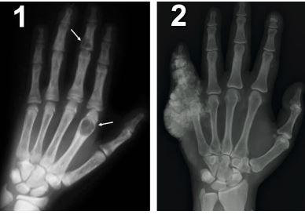
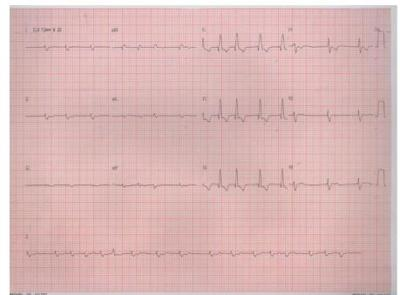
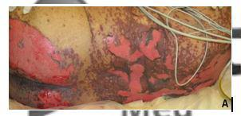
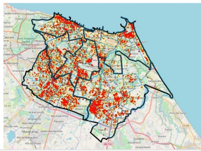
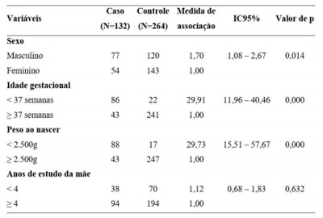
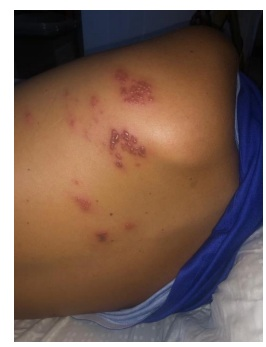

Questão 1 · Hiperbilirrubinemia não f isiológica · 4000127351Recém-nascido limítrofe (36 semanas), Apgar 9 e 9, mãe O+, encontra-se no alojamento conjunto com boa pega ao seio. Nasceu de parto vaginal com clampeamento oportuno de cordão umbilical. Está com 22 horas de vida, com boa diurese e ainda com pouca eliminação de mecônio. Ao exame, encontra-se ictérico até zona III de Kramer. Qual o fator de alerta que pode estar associado a hiperbilirrubinemia severa?
A Clampeamento precoce do cordão.
B Pouca eliminação de mecônio.
C Icterícia nas primeiras 24 horas.
D Icterícia pelo leite materno.
Questão 2 · Passos iniciais · 4000127350Os recém-nascidos que, ao nascimento, não iniciam movimentos respiratórios regulares e/ou aqueles cujo tônus muscular está ácido precisam ser conduzidos à mesa de reanimação. Nesses casos, quais os passos iniciais indicados em um correto procedimento de reanimação?
A Posicionar a cabeça em extensão, aspirar boca e narinas, entubar e ventilar. Esses passos devem ser executados em, no máximo, 60 segundos.
B Posicionar a cabeça em leve extensão, aspirar boca e narinas, e ventilar com ambu e máscara. Esses passos devem ser executados nos primeiros 30 segundos.
C Prover calor, posicionar a cabeça em leve extensão, aspirar boca e narinas, se necessário, e secar o paciente. Esses passos devem ser executados em, no máximo, 30 segundos.
D Aspirar boca e narinas, posicionar a cabeça em leve extensão, prover calor e ventilar com ambu e máscara, além de massagem cardíaca. Esses passos devem ser executados nos primeiros 60 segundos.
Questão 3 · Def inição · Diagnóstico Dif erencial · Trato Gastrointestinal · 4000127349Pré-escolar de três anos, muito irritado, é levado para atendimento médico por apresentar quadro de diarreia crônica com fezes que utuam na superfície do vaso de odor muito fétido, com perda de peso e dor abdominal. Tem história perinatal de fezes espessas, com di culdade para evacuar. Ao exame físico, apresenta hepatomegalia. De acordo com a história clínica, qual a hipótese e o exame a ser solicitado para confirmação do diagnóstico?
A Fibrose cística – Dosagem de Sódio e Cloro no suor.
B Doença Celíaca – Dosagem de Anticorpo antitransglutaminase IgA.
C Doença de Crohn – Colonoscopia com biópsia de intestino delgado.
D Abetalipoproteinemia – Análise lipídica em jejum na criança e nos pais.
Questão 4 · Classif icação da desidratação · Plano B · 4000127348Criança de 15 meses chega à emergência do hospital com quadro de vômitos e diarreia intensa há 24 horas. Mãe relata oligúria, está irritado, tem o turgor da pele diminuído, pulsos nos, olhos fundos e lágrimas ausentes. Na avaliação da criança, segundo orientação da Organização Mundial da Saúde (OMS), qual o grau de desidratação e respectiva terapêutica para o caso?
A Desidratação grave – criança com diarreia e desidratação grave (> 10% de perda)necessita de hospitalização e hidratação endovenosa para restabelecer rapidamente a perfusão aos órgãos vitais.
B Algum grau de desidratação – criança com diarreia aguda pode ser tratada no domicílio, com aumento da oferta de líquidos e após cada evacuação oferecer a SRO, de 50 a 100 mL para menores de 2 anos.
C Desidratação grave – criança com vômitos persistentes, deve-se tentar a administração da SRO por sonda nasogástrica (via eficaz), 20 mL/kg/h, durante 4 a 6 horas, oferecendo a SRO em pequenos volumes.
D Algum grau de desidratação – criança com diarreia e desidratação leve a moderada (5 a 10% de perda), realiza-se a reposição com 50 a 100 mL/kg em 3 a 4 horas, oferecendo a SRO em pequenos volumes.
Questão 5 · Prevalência · Obesidade · 4000127347Durante consulta de avaliação de rotina, uma criança de 5 anos apresentava história clínica e familiar preditiva para obesidade. Ao exame físico, apresentava IMC acima do percentil 97, aumento da circunferência abdominal com percentil acima de 90 para sua idade, medidas de dobras cutâneas com elevada porcentagem de gordura corporal e acantose nigricans em região cervical. Dentro do quadro clínico do paciente na infância, quais são os mais fortes preditores de síndrome metabólica na idade adulta?
A História clínica e familiar preditiva para obesidade.
B IMC acima do percentil 97 e acantose nigricans em região cervical.
C História clínica preditiva para obesidade e IMC acima do percentil 97
D Circunferência da cintura maior que o percentil 90 e as medidas de dobras cutâneas.
Questão 6 · Imunodef iciências combinadas · 4000127346André, 15 meses de idade, é atendido no ambulatório de pediatria com sinusites e otites frequentes há 8 meses. Infecções de repetição não muito graves que melhoram com antibioticoterapia oral. Lactente apresenta crescimento e desenvolvimento normais. Vacinação atualizada. Nega reações vacinais. Ao exame físico, apresenta tecido linfoide amigdaliano e gânglios palpáveis menores que 1,0 cm. Pensando na possibilidade de imunode ciência, o diagnóstico mais provável é:
A agamaglobulinemia ligada ao x.
B hipogamaglobulinemia transitória.
C imunodeficiência combinada grave.
D síndrome de imunodeficiência adquirida.
Questão 7 · Def iciência · 4000127345Alice, 9 meses de idade, é atendida no ambulatório de puericultura com história de palidez cutâneo-mucosa progressiva e irritabilidade há 3 meses. Refere aleitamento materno exclusivo até os 2 meses de idade e depois iniciado leite de cabra. Apresenta dieta pobre em carnes e verduras. O pediatra diagnosticou anemia por de ciência de folatos. Quais alterações descritas abaixo no hemograma são mais compatíveis com essa anemia?
A Anisocitose, macrocitose, trombocitopenia, leucopenia.
B Anisocromia, neutrófilos hipersegmentados, leucocitose.
C Poiquilocitose, hipercromia, reticulocitose, pancitopenia.
D Anisopoiquilocitose, microcitose, trombocitose, neutropenia.
Questão 8 · Anemia Fisiológica · 4000127344Lactente, 2 meses, é levado ao posto de saúde para consulta de puericultura. Bebê nasceu de parto normal, a termo, sem intercorrências, Peso de nascimento: 3,1kg. Está em aleitamento materno exclusivo. Apresenta crescimento e desenvolvimento normais para a idade. Ao exame físico: Bom estado geral, pálido (+/4+), hidratadado, anictérico, ativo, afebril. Ausculta cardiopulmonar sem alterações. Abdome ácido, sem visceromegalias. Mãe queixa-se que a criança é pálida. Trouxe um hemograma do lactente que fez por conta própria devido à suspeita de anemia: Hb=9,6g/dL Ht= 30% VCM=84fL CHCM=32g/dL Leucograma: 6.300 Plaquetas: 350.000. Com base nesse quadro clínico e nos resultados do hemograma apresentados, a melhor conduta a ser tomada é:
A Seguir acompanhamento de puericultura.
B Solicitar exames para investigação de hemólise.
C Solicitar sangue oculto nas fezes e dosagem de ferritina.
D Iniciar suplementação de ferro oral em dose terapêutica.
Questão 9 · Diagnósticos dif erenciais · Quadro clínico · 4000127343Lactente, 10 meses, sexo masculino, é levado à emergência por sua mãe com quadro de tosse seca, febre alta e coriza há 5 dias. Relata que há 48 horas apareceram ""manchas vermelhas em todo o corpo"" e conjuntivite bilateral. Cartão vacinal atualizado até 6 meses de idade. Irmã de 7 anos apresentou quadro clínico semelhante há 2 semanas. Ao exame físico: estado geral regular, irritado, febril, eupneico, hidratado. Ausência de sinais meníngeos. Ausculta pulmonar e cardiovascular normais. Abdome sem alterações. Rash maculopapular generalizado, con uente em face e tronco, com enantema difuso de mucosa oral. Diante do quadro clínico apresentado, qual o diagnóstico mais provável?
A Rubéola.
B Sarampo.
C Exantema súbito.
D Doença de Kawasaki.
Questão 10 · Diagnóstico dif erencial das anemias microcíticas · Talassemias · 4000127342Paciente masculino, 25 anos, vegetariano, apresenta-se para exame admissional com exames realizados. Traz o seguinte hemograma: Hemácias: 5,3milhões/mm³ (VR: 4,56milhões/mm³) Hb: 11,1g/dL (VR: 13,5-17,5) Ht: 33% (VR: 40-52) VCM: 72fL (VR: 81-99) HCM: 25pg (VR: 30-34) RDW: 13% (VR: 12-14) Leucócitos: 6500/mm³ (VR: 4000-10000) Plaquetas: 452000/mm³ (VR: 150000-450000) – presença de hemácias em alvo. Demais exames sem anormalidades. Nega etilismo. Relata estar assintomático e nega doenças prévias, mas relata que sempre teve alguma alteração em hemogramas anteriores, sendo que nunca lhe foi orientado nenhum tratamento específico. LEGENDA: VR: valor de referência; VCM: volume corpuscular médio; HCM: hemoglobina corpuscular média; RDW: índice de anisocitose. Em relação ao diagnóstico provável para a anemia encontrada, qual exame seria mais específico para confirmação?
A Perfil bioquímico do ferro.
B Dosagem de vitamina B12.
C Eletroforese de hemoglobina.
D Mielograma usando corante azul da Prússia.
Questão 11 · Exame f ísico e Avaliação Funcional do Idoso · 4000127341Homem de 80 anos, viúvo, aposentado e analfabeto, mora com a lha e comparece ao Posto de Saúde para consulta de rotina. Antecedentes: hipertensão, diabetes, osteoartrose de joelhos, obesidade, glaucoma e retinopatia diabética. Traz exames com hemograma, per l glicêmico e lipídico, função renal e tireoidiana, todos normais. Filha refere que no último ano o paciente tem necessitado de ajuda para manejo das medicações e atividades fora do domicílio. Pouco sai de casa e não demonstra mais interesse em sua vida cotidiana. Qual a provável causa da di culdade em atividades do dia a dia e a abordagem inicial?
A Déficit cognitivo – aplicar Mini-Exame do Estado Mental e iniciar tratamento de demência.
B Perda funcional multifatorial – aplicar escala de Lawton e Katz e iniciar manejo decomorbidades.
C Transtorno depressivo – aplicar Escala de Depressão Geriátrica para diagnóstico e iniciar tratamento.
D Perda funcional secundária a senescência – aplicar Avaliação Geriátrica Ampla eorientar sobre o quadro.
Questão 12 · Complicações da DRC · 4000127340Um senhor de 57 anos, diabético e hipertenso mal controlado de longa data, portador de doença arterial periférica e aterosclerose difusa é acompanhado por doença renal crônica não dialítica classificada como estágio G2A3. Ele comparece em consulta de retorno com queixa de dor em região de segundo metacarpo e região interfalangeana proximal. Realizou radiogra a (imagens abaixo). Cálcio iônico 1,04 (VR: 1,1 - 1,4 mmil/L) Fósforo 6,5 mg/dL (VR: 2,5 - 4,5 mg/dL) PTH 354 pg/dL (VR: 10-60 pg/dL). LEGENDA: VR: valor de referência; PTH: paratormônio. Qual medicação poderia ter prevenido o surgimento da lesão na IMAGEM 1 se iniciada precocemente e qual poderia precipitar a lesão da IMAGEM 2, respectivamente?

A Acetato de Cálcio e Lantanum.
B Carbonato de Cálcio e Sevelamer.
C Sevelamer e Carbonato de Cálcio.
D Lantanum e Hidróxido de Alumínio.
Questão 13 · Tratamento Medicamentoso das Epilepsias · 4000127339Homem, 40 anos, com antecedente de epilepsia em uso irregular de ácido valproico 1 grama ao dia, sem tomar a medicação há 1 semana, é trazido pelo SAMU por apresentar episódios de convulsão tônico-clônicos generalizados há 30 minutos. Nesse período, o paciente já apresentou 3 episódios com duração aproximada de 5 minutos cada, sem recobrar a consciência. Apresentou, durante o transporte, mais um episódio convulsivo e foi medicado pelo médico do SAMU 2 vezes com Diazepam 10mg endovenoso. Na chegada, o paciente apresenta nova crise convulsiva que persiste até o início de sua avaliação (aproximadamente 5 minutos). Ao Exame: pulso: 90 batimentos por minuto, pressão arterial de 160 x 90mmHg. Glicemia capilar de 100 mg/dl. Peso aproximado de 80 kg. Após a monitorização e suporte clínico, qual a melhor conduta farmacológica?
A Diazepam 10mg Endovenosa.
B Fenitoína 1600mg Endovenosa lenta.
C Acido Valproico 2 gramas via sonda.
D Fenobarbital 1600mg Endovenoso lento.
Questão 14 · Clínica Médica · Neurotoxoplasmose · Inf ecções oportunistas · 4000127338Homem de 44 anos é levado à Unidade de Pronto-Atendimento com história de duas semanas de febre, cefaleia intensa progressiva e episódios de desorientação. Há um dia, apresenta convulsões tônico-clônicas generalizadas. Ao exame: hipocorado 2+/4+, emagrecido; Glasgow 13, hemiparesia esquerda; ausência de sinais de irritação meníngea. Familiares relatam que fazia acompanhamento por infecção por HIV mas abandonou tratamento há 1 ano. Exames de um mês atrás: CD4 = 80 células/mm³ (VR = acima de 500 células/mm³), carga viral = 246.000 cópias/mL (VR = abaixo de 40 cópias/ml). TC de crânio com contraste teve o seguinte resultado (ver imagem). LEGENDA: VR: valor de referência. Com base na principal hipótese para o caso, qual o próximo passo do processo diagnóstico?

A Colher líquor para PCR.
B Iniciar prova terapêutica.
C Dosar IgM e IgG no sangue.
D Indicar biópsia estereotáxica.
Questão 15 · Tratamento · 4000127337Mulher, 66 anos, acompanhada há 6 anos devido a doença de Parkinson, em uso de levodopa desde o início do acompanhamento. Há 8 meses, apresenta movimentos involuntários, inicialmente em membros inferiores, depois acontecendo também em tronco e membros superiores, iniciados após 90 minutos da tomada da levodopa, durando aproximadamente 30 minutos. Faz uso atual de levodopa/carbidopa 250/25mg 1/2 (meio) comprimido em 5 tomadas ao dia (intervalo médio de 3 horas entre as tomadas). Nega uso de outras medicações ou perda de efeito (rigidez, lenti cação ou tremor) entre as tomadas. Ao exame neurológico são observados movimentos coreiformes em membros inferiores e superiores, além de leve rigidez e bradicinesia assimétricas. Qual a melhor opção terapêutica para ser associada a levodopa/carbidopa nessa paciente para diminuir os movimentos descritos?
A Amantadina
B Pramipexol.
C Biperideno.
D Rasagilina.
Questão 16 · Hematologia · Quadro Clínico do mieloma múltiplo MM · 4000127336Paciente, 72 anos, sexo masculino, comparece ao ambulatório de Clínica Médica com queixa de dores ósseas difusas, particularmente na coluna. Ao exame físico, apresenta-se algo hipocorado e com fácies de dor. Traz alguns exames laboratoriais: Hemoglobina 11,2g/dl (VR: 13-16 g/dl) Cálcio iônico 1,5mmol/L (VR: 1,15-1,32mmol/L) Creatinina 1,6mg/dl (VR: 0,8-1,2mg/dl) Fosfatase alcalina 64U/L (VR: 50-200U/L), além de radiogra as da coluna evidenciando lesões osteolíticas difusas. LEGENDA: VR: valor de referência. Considerando a principal hipótese diagnóstica, qual dos exames a seguir deve ser solicitado?
A PSA total
B Cintilografia óssea.
C Densitometria mineral óssea.
D Eletroforese de proteínas séricas
Questão 17 · Tratamento · Síndrome de veia cava superior · 4000127335Homem de 70 anos, tabagista 60 anos/maço com quadro de tosse e hemoptoicos há cerca de 3 meses associado a perda de peso de 5kg. Procura o pronto-socorro por apresentar dispneia e piora da tosse há cerca de 5 dias. Ao exame, evidenciado edema de pescoço à direita, frequência respiratória de 26 incursões por minuto, saturação de oxigênio de 89% em ar ambiente, ausculta pulmonar com redução do murmúrio vesicular em base direita, pressão arterial 160x100mmHg. Radiogra a de tórax evidenciando alargamento do mediastino superior e derrame pleural a direita. Frente ao provável diagnóstico de base, além da oferta de oxigênio suplementar, qual a melhor conduta inicial?
A Morfina e enalapril
B Metilprednisolona e codeína.
C Moxifloxacino e hidrocortisona.
D Furosemida e elevação da cabeceira.
Questão 18 · Artrite reumatoide AR · Diagnóstico · Exames complementares · 4000127334Mulher de 53 anos, relata dor e edema em mãos e punhos há aproximadamente quatro meses. Há ainda adinamia durante todo o período, além de rigidez matinal de uma hora aproximadamente. Ao exame: sinovite do primeiro ao quinto metacarpofalangeanas e interfalangeanas proximais de ambas as mãos bem como calor e rubor em joelhos. Trouxe exames realizados previamente: fator reumatoide ELISA 120UI/ml (VR: < 15 UI/ml). Sobre a doença em questão, marque a alternativa que contempla a hipótese clínica mais provável e um exame mais específico para o quadro clínico, respectivamente.

A Artrite reumatoide e anti-peptídeo citrulinado.
B Lupus eritematoso sistêmico e Fator anti-núcleo.
C Hepatite por vírus do tipo C e Proteína C reativa.
D Crioglubulinemia mista tipo II e radiografia de mãos e punhos.
Questão 19 · Diagnóstico · Gastroenterologia · 4000127333Mulher de 38 anos com evacuações frequentes há 3 meses, em qualquer hora do dia ou da noite, volumosas, aquosas, sem sangue, dor, febre ou relação com as refeições. Relata perda de 2 kg, redução do apetite, náuseas e tonturas matinais. Nega etilismo, medicamentos de uso crônico ou habitual. Ao exame, apresenta hiperpigmentação cutânea e algumas lesões hipocrômicas sugestivas de vitiligo. Normocorada, anictérica e afebril, apresenta hipotensão postural e desidratação leve. IMC: 26 kg/m². Exame do abdome e demais sistemas sem anormalidades. Exames prévios: hemograma normal, sódio: 132 mEq/L (VR: 135-145 mEq/L), potássio: 5,6 mEq/L (VR: 3,5 - 5,0 mEq/L), pesquisa de sangue oculto nas fezes negativo, pesquisa de gordura fecal 3g/dia (VR: 1,8 - 6 g/dia). LEGENDA: VR: valor de referência; IMC: índice de massa corporal. Qual conduta mais apropriada e o diagnóstico provável?
A Pesquisar o antígeno da Giardia Lamblia e tratar com metronidazol – giardíase.
B Dosar cortisol e ACTH basal e repor glico e mineralocorticoide – doença de Addison.
C Realizar teste terapêutico com antidepressivos tricíclicos – síndrome do intestino irritável.
D Realizar teste terapêutico com restrição de leite e derivados na dieta – intolerância à lactose.
Questão 20 · Introdução · Tratamento Geral · 4000127332Criança, 2 anos, é levado à emergência com quadro de febre e tosse há 3 dias. Exame físico: Tax: 37,2ºC, regular estado geral, FR: 58 irpm e tiragem subcostal. Ausculta pulmonar: crepitações em base de hemitórax esquerdo. Radiogra a de tórax: infiltrado em lobo inferior esquerdo. A conduta mais adequada nesse caso é:
A Internar para antibioticoterapia parenteral com penicilina cristalina
B Tratamento ambulatorial com amoxicilina e retorno em 48 horas para reavaliar.
C Tratamento ambulatorial com azitromicina e retorno em 48 horas para reavaliar.
D Solicitar hemograma, proteína-C reativa e VHS, internar para antibioticoterapia sealgum dos exames sugerir infecção bacteriana.
Questão 21 · Hepatologia · Ligadura Elástica Endoscópica · Tratamento Endoscópico das Varizes · 4000127331Paciente 56 anos, masculino, etilista importante, há 6 meses vem apresentando aumento do volume abdominal e edema de membros inferiores. Procurou emergência por ter evoluído com 2 episódios de hematêmese nas últimas 12 horas, além de melena. O paciente encontra-se estável hemodinamicamente e exames de urgência mostram Hb = 9,8 mg/dl (VR: 13 - 16). A endoscopia revela varizes esofágicas de médio calibre com sangramento ativo. LEGENDA: VR: valor de referência. Qual a conduta mais indicada, dentre as opções abaixo, para este cenário clínico?
A Realizar ligadura de varizes e administrar somatostatina.
B Administrar octreotide e prescrever omeprazol por via oral.
C Prescrever terlipressina e transfundir concentrado de hemácias.
D Iniciar antibioticoterapia e administrar omeprazol em infusão contínua.
Questão 22 · Estenose mitral · Anticoagulação oral · 4000127330Paciente, 52 anos, sexo masculino, previamente hígido, assintomático, comparece à consulta de rotina no ambulatório. Ao exame físico, chamam atenção sopro em ru ar diastólico 3+/6+ no foco mitral e ritmo cardíaco irregular com frequência cardíaca em torno de 84 batimentos por minuto. Realizado eletrocardiograma ( figura abaixo) e ecocardiograma transtorácico que evidenciou estenose mitral moderada. Qual conduta deve ser tomada nesse momento?

A Iniciar uso de rivaroxaban sem necessidade de monitoração do INR.
B Iniciar varfarina e realizar a monitorização do INR ambulatorialmente.
C Internar o paciente para administrar enoxaparina e iniciar uso de varfarina.
D Manter conduta expectante, pois o paciente apresenta baixo risco de complicações
Questão 23 · Exacerbação Aguda da DPOC EADPOC · 4000127329Para um paciente adulto, 50 anos, com crises de desconforto torácico e tosse seca, praticamente diários no último ano, que pioram ao acordar, sem comorbidades prévias, cuja radiogra a de tórax foi normal e a espirometria apresentou os seguintes resultados: ( Pré-bronco dilatador): VEF1/CVF: 0,80 VEF1: 2,32L CVF: 2,90L (Pós- bronco dilatador): VEF1/CVF: 0,81 VEF1:2,62L CVF:3,21L. Legenda: VEF1: volume expiratório forçado 1º segundo; CVF: capacidade vital forçada. A opção terapêutica com melhor custo efetividade, além do corticoide inalatório contínuo, seria:
A Formoterol contínuo.
B Salbutamol contínuo
C Formoterol nas crises
D Salbutamol nas crises.
Questão 24 · Derrame Pleural · Empiema · 4000127328Paciente masculino, 26 anos, internado há 3 dias com quadro de tosse produtiva, febre e dor torácica à esquerda iniciado uma semana antes da admissão. Na admissão, constatadas febre, pressão arterial e frequência respiratória normais. Ausculta pulmonar apresentava-se com murmúrio vesicular reduzido em 2/3 inferiores de hemitórax esquerdo e frêmito toracovocal reduzido na mesma localização. Encontra-se em uso de ceftriaxona e azitromicina, hoje mantendo quadro clínico e exame físico semelhantes aos da admissão. Ultrassonogra a mostrou derrame pleural ocupando os 2/3 inferiores do hemitórax esquerdo, sendo submetido a toracocentese com retirada de 60 ml de líquido citrino cujo estudo evidenciou pH = 7,16, glicose = 35 mg/dl, celularidade aumentada às custas de neutró los, com características de exsudato. Cultura do líquido pleural ainda está em andamento. Qual das opções abaixo descreve a conduta adequada a ser realizada no contexto clínico descrito?
A Ampliar esquema antimicrobiano para piperacilina + sulbactam.
B Manter conduta atual até resultado de cultura obtida do líquido pleural.
C Realizar tomografia de tórax e indicar decorticação se derrame pleural estiver livre.
D Realizar drenagem pleural com posicionamento de dreno na cavidade acometida.
Questão 25 · Reação do tipo 2 · 4000127327Homem de 48 anos iniciou, há 20 dias, uso de poliquimioterapia (PQT) multibacilar, incluindo dapsona, clofazimina e rifampicina, para tratamento de hanseníase forma dimorfa virchowiana. Há 2 dias, passou a apresentar febre baixa, astenia, dor ocular bilateral, mialgia e lesões cutâneas dolorosas. Nega perda de força muscular. Ao exame, apresentava-se febril, normocorado, anictérico, acianótico e exame dermatológico revelava nódulos eritematosos em membros. Diante do provável diagnóstico do quadro mais recente apresentado pelo paciente, qual a conduta mais recomendada neste momento?
A Manter PQT e iniciar talidomida oral.
B Manter PQT e iniciar prednisona 1mg/kg.
C Suspender dapsona e substituir por ofloxacina.
D Suspender dapsona e iniciar azul de metileno venoso.
Questão 26 · Apresentação clínica · Tratamento · 4000127326Mulher de 32 anos procurou assistência médica, há 10 dias, por quadro de disúria e polaciúria, sendo tratada com sulfametoxazol e trimetoprim. Há 5 dias, passou a apresentar febre alta, dor em orofaringe e eritema em conjuntivas bilateralmente. Após um dia do início do quadro, percebeu manchas eritematosas inicialmente em tronco que, em menos de 24 horas, acometeram também extremidades. Em áreas de atrito, as lesões evoluíram com escurecimento central e bolhas. Procurou novamente atendimento, apresentando lesões visualizadas na figura A. Diante do provável diagnóstico, qual o cenário adequado e quais as medidas de tratamento, respectivamente?

A Enfermaria – imunoglobulina endovenosa e corticoterapia sistêmica.
B Unidade de Terapia Intensiva – antibioticoterapia endovenosa e tópica.
C Unidade de queimados – cuidados de suporte e vigilância para infecções secundárias.
D Unidade de Terapia Intensiva – corticoterapia endovenosa e depois oral até resolução.
Questão 27 · Tratamento percutâneo da estenose aórtica · 4000127325Paciente masculino, 76 anos, com histórico de dispneia aos esforços moderados, foi internado com quadro de dor torácica e síncope ao realizar esforço. Realizou cateterismo que demonstrou 3 pontes pérvias de cirurgia de revascularização coronária realizada há 2 anos, sem lesões significantes. É diabético mal controlado, em uso irregular de insulina 1,6 U/kg/dia e apresenta claudicação em membros inferiores, ao caminhar cerca de 150 metros. Ex-tabagista de 75 maços/ano, abandonou tabagismo há 2 anos e mantém-se em tratamento para en sema pulmonar moderado. Ao exame, tem IMC: 33,1 kg/m², PA: 124 x 104mmHg, Pulso regular de 96 bpm com ascensão lenta. Sopro sistólico ejetivo com pico telessitólico mais audível no 2o espaço intercostal próximo à borda esternal direita. Creatinina sérica de 2,3 mg/dL (VR: 0,8-1,3). Eletrocardiograma com hipertro a ventricular esquerda e padrão de sobrecarga. Ecocardiograma com fração de ejeção de 48%, Pressão sistólica de artéria pulmonar estimada em 50 mmHg, área valvar aórtica de 0,7 cm² e gradiente Ventrículo esquerdo - Aorta de 55 mmHg. LEGENDA: VR: valor de referência; IMC: índice de massa corporal; bpm: batimentos por minuto. Qual a terapêutica preferencial para o paciente nesse momento?
A Cirurgia de troca valvar aórtica.
B Plastia de valva aórtica com balão.
C Implante de bioprótese aórtica transcateter.
D Reabilitação cardiopulmonar exercícios físicos estruturados.
Questão 28 · Bisf osf onatos · Moduladores seletivos dos receptores de estrógeno SERMs · Teriparatida · 4000127324Mulher de 48 anos foi referenciada ao reumatologista com diagnóstico recente de artrite reumatoide. Encontra-se em uso de corticoide e realizou densitometria óssea e o T-escore na coluna lombar (L1-L4) foi -2,3. Desde então, vem em uso de carbonato de cálcio e vitamina D. Ciclos menstruais irregulares. Negou outros antecedentes patológicos ou uso de outras medicações. Negava tabagismo ou etilismo. Sua mãe teve osteoporose menopausal. Ao exame, IMC 24 kg/m2, altura 158 cm, sem cifose ou escoliose. Exames laboratoriais: 25-OH vitamina D 30 ng/mL ( VR: > 20 ng/dL) , cálcio 9,5 mg/dL (VR: 8,5 10,2 mg/dl), fósforo 3,0 mg/dl (VR: 2,5- 4,5 mg/dL) e PTH 42 pg/ml (VR: 10-65 pg/mL). Radiogra a de coluna torácica não revelou sinais de fratura vertebral. LEGENDA: VR: valor de referência; IMC: índice de massa corporal; PTH: paratormônio. Qual a medicação mais indicada para esta paciente?
A Raloxifeno.
B Teriparatida.
C Denosumab.
D Risendronato
Questão 29 · Síndrome da Apneia Obstrutiva do Sono · Diagnóstico · 4000127323Homem de 52 anos foi avaliado por queixa de cefaleia occipital frequente, fadiga e sonolência diurna. Sedentário, também referia dispneia aos esforços mais acentuados como correr ou subir escadas. Ao exame, apresentava IMC 32,5 kg/m2, circunferência abdominal 102 cm, PA: 150 x 100 mmHg, pulso 95 bpm. Abdômen: globoso por adiposidade e sem estrias. Exames bioquímicos: Glicemia 118 mg/dL, A1C: 5,5%, Colesterol: 225 mg/dL, HDL: 32 mg/dL, Triglicerides: 335 mg/dL, LDL: 126 mg/dL. Foi prescrito losartana e recomendado mudanças no estilo de vida. LEGENDA: IMC: índice de massa corporal; PA: pressão arterial; bpm: batimentos por minuto; A1C: hemoglobina glicada. Qual conduta adicional seria a mais indicada?
A Solicitar polissonografia para investigar apneia do sono.
B Prescrever ácidos graxos de ômega 3 para promover elevação do HDL.
C Indicar cirurgia bariátrica para tratar a obesidade e prevenir diabetes tipo 2.
D Dosar microalbuminúria e proteína C reativa para confirmar síndrome metabólica.
Questão 30 · Psicof ármacos nas Emergências Psiquiátricas · 4000127322Senhor de 70 anos, sem história de doença neuropsiquiátrica, deu entrada no serviço de emergência, no turno da noite, apresentando inquietação, certo entorpecimento da consciência, alteração do juízo da realidade com pseudopercepções e desorientação alopsíquica. A família relata que o quadro se iniciou no dia anterior depois de episódios repetidos de diarreia e que, durante o dia, ca mais prostrado. Neste caso, qual é a intervenção psicofarmacológica sintomática de primeira escolha?
A Clozapina.
B Aripiprazol.
C Haloperidol.
D Clorpromazina.
Questão 31 · Resposta Metabólica · Resposta Neuroendócrina · Cirurgia · 4000127321Um paciente com 56 anos, tabagista, com história de icterícia, perda de peso e emagrecimento, foi admitido para tratamento cirúrgico. Na avaliação clínica pré-operatória, não foram evidenciadas comorbidades maiores e o paciente foi classificado como ASA II, conforme a escala da American Society of Anestesiology. O estadiamento pré-operatório mostrou lesão compatível com adenocarcinoma da cabeça do pâncreas localizado. Foi realizada duodenopancreatectomia cefálica e o paciente se encontra no primeiro dia de pós-operatório em unidade de terapia intensiva, clinicamente bem, conforme o boletim médico. Com base na chamada resposta sistêmica à cirurgia, qual das seguintes condições é esperada para esse paciente?
A Aumento dos níveis de cortisol em resposta à liberação renal de renina.
B Redução dos níveis de aldosterona em resposta à ativação da via simpato-renal.
C Ativação do sistema nervoso simpático reduzindo a secreção de insulina no pâncreas.
D Hipoglicemia secundária à aumento dos níveis do hormônio do crescimento (GH).
Questão 32 · Clínica Médica · Fisiopatologia · Acidentes Vasculares Cerebrais AVC · 4000127320Paciente de 25 anos foi admitida em emergência cirúrgica vítima de trauma automobilístico e colisão frontal com outro veículo. Após o atendimento inicial, houve estabilização hemodinâmica seguinte à expansão volêmica e drenagem de hemopneumotórax à esquerda. Estava consciente, orientada e com queixas álgicas no corpo todo e em especial no membro inferior esquerdo, presença de equimoses em pescoço, à esquerda, tórax e abdômen em correspondência a área de contato com o cinto de segurança, en sema subcutâneo em hemitórax esquerdo e fratura de corpo de fêmur à esquerda. A investigação por imagem evidenciou: – Rx de tórax: dreno bem posicionado, boa expansão pulmonar, en sema subcutâneo. – Rx de coluna cervical, Rx de pelve e ultrassonogra a de abdômen sem anormalidades. – Rx da coxa com fratura de diáfise de fêmur esquerdo. – Tomografia computadorizada de crânio – sem anormalidades. Foi internada e evoluía bem, até que após 48 horas de internação, evoluiu com hemiparesia à esquerda. Feita nova TC de crânio, que evidenciou lesão frontotemporo-parietal esquerda compatível com AVC isquêmico. Qual a provável causa?
A Embolia gordurosa.
B Traumatismo crânio-encefálico.
C Lesão de artéria carótida interna.
D Tromboembolismo venoso profundo.
Questão 33 · Apresentação Clínica · Diagnóstico · Cirurgia · 4000127319Paciente do sexo masculino, 78 anos, procurou uma UPA com queixa de dor em todo o pé esquerdo, de moderada intensidade, além de pequeno ferimento que ocorreu há cerca de 20 dias após um pequeno incidente doméstico (esbarrou na quina de um móvel) e ainda não cicatrizou. Faz uso de medicações para tratamento clínico para dislipidemia e hipertensão arterial sistêmica. É tabagista há 30 anos, com um consumo estimado de 10 cigarros ao dia. Nega tratamento para diabetes. Nega sintomas de claudicação intermitente. Ao exame, apresentava-se com taquicardia leve e pulso irregular, os pulsos femoral e poplíteo à esquerda não eram palpáveis e havia um ferimento super cial de 0,5 cm em dorso do 4o pododáctilo esquerdo, sem sinais de gangrena. Com base na situação clínica exposta, qual dos achados abaixo é indicativo de encaminhamento a um serviço de cirurgia vascular?
A Taquicardia com frequência cardíaca irregular.
B Ausência de pulsos femoral e poplíteo em MIE.
C Dor localizada em todo o pé esquerdo.
D Ferimento no dorso do 4° pododáctilo.
Questão 34 · Hidrocele · Cirurgia · 4000127318Paciente do sexo masculino, de 45 anos, foi referido a partir de uma unidade básica de saúde com relato de aumento indolor do volume escrotal à esquerda. Conforme o relato do médico que o encaminhou, o exame físico revelava aumento volumétrico e moderado do escroto à esquerda, indolor à palpação, de consistência tensa e totalmente passível de transiluminação. Foram realizadas também as dosagens séricas de alfafetoproteína e gonadotro na coriônica humana. Na avaliação clínica do especialista, os achados clínicos da transiluminação foram confirmados e não havia sugestão de aumento de volume testicular. Qual deve ser o resultado esperado das dosagens hormonais realizadas?
A Aumento do nível sérico de alfafetoproteína.
B Níveis séricos de ambos dentro da normalidade.
C Aumento do nível sérico de ambos os hormônios.
D Aumento do nível sérico de gonadotrofina coriônica humana.
Questão 35 · Pacientes Não Usuários de Insulina · Sulf onilureias · 4000127317Um paciente de 54 anos foi internado à noite para realizar procedimento cirúrgico de grande porte (gastrectomia total) na manhã seguinte. Tem relato de ser diabético em uso de hipoglicemiante oral (sulfonilureia) e trouxe o resultado (ainda não checado pela equipe assistente) de hemoglobina A1c realizado há uma semana (7%), a função renal era normal. A cirurgia está prevista para ocorrer às 11 horas da manhã seguinte. Como deve ser a conduta do médico plantonista quanto às orientações pré-operatórias desse paciente?
A Suspender a sulfonilureia e prescrever insulina de curta duração sob demanda.
B Suspender a cirurgia com base no valor de HbA1c e risco de complicações.
C Prescrever o hipoglicemiante oral com pouca água na manhã do procedimento.
D Prescrever insulina de longa duração na véspera da cirurgia e suspender a sulfonilureia.
Questão 36 · Pneumotórax Aberto · Cirurgia · 4000127316Paciente do sexo masculino foi vítima de trauma perfurante torácico, há 3 meses (arma branca), sendo submetido na ocasião a drenagem pleural com selo d'água em hemitórax direito por cerca de 5 dias, seguido de alta hospitalar. Retorna à UPA com queixa de leve dispneia e dor torácica no mesmo lado da drenagem, com piora há 5 dias. Foi feito raio x simples de tórax que evidenciou a presença de velamento da porção inferior do hemitórax direito associada à espessamento pleural e encarceramento do pulmão. Foi referido a um serviço especializado para investigação e tratamento. A tomogra a de tórax confirmou que se tratava de coleção composta por líquido espesso e multiloculada. Qual deve ser o tratamento de escolha?
A Toracocentese.
B Cirurgia torácica vídeoassistida.
C Drenagem pleural fechada sob selo d'água.
D Antibioticoterapia associada à reabilitação respiratória.
Questão 37 · Prevenção · Tratamento · Diagnóstico · 4000127315Uma criança de 5 anos foi trazida à UPA vítima de mordedura de cão, na região malar, há 1 hora. Ao ser admitida foi vista ferida com cerca de 3 cm de extensão na região malar esquerda, sem áreas necróticas ou sangramento ativo e de aspecto irregular com extensão de 3 cm. A ferida foi lavada com água e sabão em casa e o cão era da família, passível de observação e não apresentava comportamento anormal ou doença evidente no momento do acidente. O cartão de vacinas da criança está completo. Acerca do manejo desse paciente, pode-se afirmar que:
A A profilaxia por vacina antirrábico não é necessária.
B Deve-se realizar a lavagem da ferida mas não a sutura.
C Deve-se realizar antibióticos e vacina antitetânica profiláticos.
D Deve-se realizar a limpeza da ferida com substância viricida (p.ex PVPI).
Questão 38 · Cisto Tireoglosso · Cirurgia · 4000127314Menino de 8 anos de idade apresenta um "caroço" em região cervical anterior, sem qualquer sintomatologia. O crescimento desta lesão tem sido lento há mais de um ano e não há relato de infecção ou dor locais. Ao exame físico, observa-se que a massa se encontra em linha média, possui limites laterais bem definidos e mobilidade à deglutição. Ultrassonogra a revela que a lesão é hipoecóica, com tireoide em posição habitual e sem qualquer anormalidade. Considerando o diagnóstico mais provável, a conduta deve incluir:
A Tomografia computadorizada de face e região cervical.
B Escleroterapia radioguiada seguida de ressecção cirúrgica.
C Exérese de persistência de trajeto fistuloso até a fossa tonsilar.
D Ressecção em bloco junto com porção central do osso hioide.
Questão 39 · Tratamento · Cirurgia · 4000127313Paciente do sexo masculino, de 42 anos, procurou a UPA com relato de que há dois dias apresenta vômitos, inicialmente claros e, posteriormente, com conteúdo fecaloide, redução na eliminação de fezes e atos, associada à dor abdominal em cólica difusa no abdômen. Ao exame da admissão, se observava cicatriz mediana de cirurgia anterior por ferimento por arma branca há dez anos, distensão abdominal importante e aparentemente sem hérnias de parede abdominal. Foram realizadas radiogra as simples de abdômen e tórax e o paciente foi regulado para um serviço de emergência cirúrgica, onde foi feita a opção por tratamento conservador com medidas de suporte e descompressão gástrica. Atualmente está com 48 horas de tratamento conservador com o mesmo quadro clinico de entrada (não houve piora ou melhora). Qual deve ser a próxima conduta?
A Manter conduta conservadora por mais 48 horas.
B Solicitar tomografia computadorizada do abdômen.
C Solicitar ressonância nuclear magnética do abdômen.
D Indicar abordagem cirúrgica (laparotomia exploradora).
Questão 40 · Métodos Complementares · Indicações para o Tratamento Cirúrgico · 4000127312Um paciente de 38 anos medindo 1,70m e pesando 72 kg, estava em acompanhamento clínico em unidade básica de saúde e foi referido a um serviço de cirurgia. O paciente relatou que há dois anos tem quadro de pirose retroesternal, mesmo em ortostase, com piora após as refeições, associado à disfonia intermitente, tosse seca e pigarro diário. Ao exame físico, apresentava somente leve desconforto à palpação profunda no epigastro. Relatava etilismo social e negava tabagismo. Ao longo desse período, fez uso de pantoprazol 40 mg e a endoscopia digestiva alta compatível com esofagite grau III de Savary-Miller. Foi solicitada, na atenção especializada, manometria esofágica que evidenciou hipotonia acentuada do esfíncter esofageano inferior e dismotilidade moderada do corpo esofágico. A pHmetria esofágica evidenciou registro na sonda proximal de 10 episódios de pH inferior a 4. Qual a conduta a ser proposta ao paciente?
A Sugerir a indicação de tratamento cirúrgico por meio de fundoplicatura vídeo-laparoscópica.
B Dobrar a dose do pantoprazol, associar medicação pró-cinética em dose plena ereforçar orientações dietéticas- comportamentais.
C Manter o tratamento clínico, associar medicação pró-cinética em dose plena e reforçarorientações dietéticas- comportamentais.
D Manter o tratamento clínico, reforçar orientações dietéticas-comportamentais eassociar tratamento endoscópico da dismotilidade.
Questão 41 · Tratamento e conduta · 4000127311Um paciente de 53 anos foi referido a um serviço de cirurgia ambulatorial com uma lesão pigmentada, escurecida, protuberante e não ulcerada em face anterior da coxa direita. O cirurgião avaliou e achou ser segura a síntese da ferida sem a necessidade de retalho e procedeu a ressecção com margem de 1 cm. Na consulta pós-operatória, a ferida estava totalmente cicatrizada, sem evidências de lesões residuais e o resultado do histopatológico evidenciou um melanoma nodular nível II de Clark e Breslow de 0,7mm. Diante deste resultado, a melhor conduta é:
A Indicar nova cirurgia com ampliação de margem oncológica para 3 cm.
B Considerar que a cirurgia foi adequada e orientar o seguimento ambulatorial.
C Indicar a realização de linfadenectomia regional, interferon
D Indicar e encaminhar o paciente para realização de pesquisa de linfonodo sentinela.
Questão 42 · Incidentaloma Adrenal · 4000127310Paciente masculino, 66 anos, procura atendimento com um cirurgião geral para uma ""segunda opinião"". Informa que há um mês procurou atendimento de emergência por um quadro de dor abdominal inespecí ca. Foi solicitada uma tomogra a computadorizada do abdômen que evidenciou como único achado positivo, uma lesão homogênea, bem delimitada e com aparente baixa captação de contraste em glândula adrenal esquerda, medindo 4cm. O paciente nega hipertensão, doenças cardíacas e outras comorbidades. No momento da consulta, nega uso de medicações regulares, está assintomático e apresenta exame físico normal. Qual deve ser a conduta?
A Solicitar punção guiada por tomografia para coleta de amostra citológica da massa.
B Encaminhar para a ressecção da massa (adrenalectomia) em decorrência de alto risco de malignização.
C Por se tratar de lesão com aspecto tomográfico benigno, observar e realizar exames tomográficos semestrais.
D Solicitar dosagem de catecolaminas urinárias em 24h e teste de supressão com dose baixa de dexametasona.
Revisar: possível letra faltando em enunciado
Questão 43 · Tumores Sólidos Abdominais da Inf ância · Cirurgia · 4000127309Criança, sexo masculino, 2 anos de idade, estava brincando com um irmão e levou uma queda da própria altura. Sua mãe, ao levantá-la do chão, achou que havia uma ""massa"" abdominal e resolveu levá-la à uma emergência. Na admissão, não havia alterações hemodinâmicas ou outros sinais clínicos de perda volêmica. Os pais informam que criança nascera a termo, de parto normal, com gestação sem intercorrências, incluindo ultrassom morfológico em terceiro trimestre normal e negaram quaisquer relatos de febre, alteração do hábito intestinal ou urinário, dor ou perda de peso, nos últimos três meses. Ao exame, a criança apresentava-se com bom estado geral, estava ativa e normocorada, porém com presença de lesão endurecida e indolor em hipocôndrio direito. Ausculta pulmonar e cardíaca normais. Sinais vitais sem alterações. Foi realizada ultrassonogra a na urgência que detectou lesão expansiva retroperitoneal à direita, não sendo possível caracterizar adequadamente rim ipsilateral e adrenais. O Rx de tórax revelou nódulo de 2cm em lobo superior do pulmão esquerdo compatível com provável etiologia neoplásica. Com base na situação clínica descrita, o diagnóstico mais provável é:
A Tumor de Wilms.
B Feocromocitoma.
C Neuroblastoma metastático.
D Carcinoma de células renais.
Questão 44 · Choque Neurogênico · 4000127308Um motociclista de 22 anos é envolvido em uma colisão com um carro, sendo atendido pela equipe do SAMU 192 que realizou o atendimento inicial conforme o PHTLS (Prehospital Trauma Life Support) e aplicou técnicas de restrição de movimento da coluna. Levado até a sala de emergência tem os seguintes dados na avaliação inicial: A: via aérea pérvia, fala confuso, oxigênio suplementar (12l/min) e colar cervical; B: FR = 28 irpm, simétrica, murmúrio bilateral presente, SaTO2 = 94%, ausência de crepitação óssea e de en sema subcutâneo; C: Sangramento na perna direita controlado com curativo compressivo, pele quente, pulsos radiais palpáveis FC= 70 bpm, enchimento capilar < 2 seg. PA= 84 x 52 mmHg, pelve estável; D: pupilas isocóricas e fotorreagentes, Glasgow = 14; sem movimento motor e sensibilidade dos membros inferiores E: diversas escoriações asfálticas, deformidade no tornozelo E (imobilizado), dorso com escoriações e áreas de dor à palpação. Realizado o eFAST (negativo), Rx de tórax e pelve sem anormalidades. Com base na história clínica descrita, qual a provável origem do choque circulatório?
A Choque medular.
B Choque neurogênico.
C Choque hipovolêmico.
D Choque hemorrágico de fonte oculta.
Questão 45 · Câncer de Cólon NãoPolipoide Hereditário · Diagnóstico laboratorial · 4000127307Uma paciente com 35 anos de idade procurou a demanda espontânea de atendimentos em unidade básica de saúde pois queria fazer uma colonoscopia e estava muito preocupada com o diagnóstico de câncer colorretal em sua irmã de 37 anos. Ela era totalmente assintomática e relatava que o pai faleceu aos 58 anos por uma obstrução intestinal provocada por um câncer colorretal, e que um tio paterno foi operado em decorrência de um tumor de ceco, aos 55 anos. A paciente negava comorbidades e seu exame físico foi completamente normal. Considerando a situação clínica apresentada, qual deve ser a forma proposta para rastreamento de câncer colorretal a essa paciente?
A Solicitar pesquisa de sangue oculto nas fezes e a colonoscopia, se for positiva.
B Orientar a realização de colonoscopia a partir dos 40 anos, repetindo o exame a cada 5anos.
C Solicitar colonoscopia e mediante resultado normal repetir o exame a cada um ou dois anos.
D Orientar a realização de colonoscopia a partir dos cinquenta anos, repetindo o exame a cada dez anos.
Questão 46 · História Clínica e Exame f ísico · Cirurgia · 4000127306Paciente, sexo feminino, 21 anos, foi admitida na UPA, com quadro de dor súbita em andar inferior do abdômen que depois se generalizou, febre e relatos de ""sensação de falta de ar"", sem conseguir se alimentar ou urinar nas últimas 8 horas. Relata que foi operada há 5 dias em decorrência de ser portadora de endometriose profunda. No relatório de alta havia a informação que fora submetida a ressecção dos focos endometrióticos e retossegmoidectomia segmentar com anastomose colorretal términoterminal mecânica, por via laparoscópica, sem intercorrências e recebendo alta no 3° dia de pós-operatório. À admissão, tinha fáscies de dor, palidez cutâneo mucosa, taquicardia (FC= 144 bpm), taquipneia (FR = 37 irpm), no abdômen havia aumento da tensão abdominal com dor a palpação super cial e profunda e descompressão brusca positiva em todo o abdômen. Qual a hipótese diagnóstica mais provável?
A Retenção urinária aguda.
B Endomiometrite pós-cirúrgica.
C Deiscência de anastomose intestinal.
D Sangramento de foco endometriótico residual.
Questão 47 · Tratamento · Quadro Clínico e Diagnóstico · 4000127305Paciente, sexo masculino, 55 anos, portador de lombalgia crônica mecânica inespecí ca, há dois anos, com episódios pouco frequentes de piora intermitente da dor. Ontem, compareceu à UPA com dor intensa, em choque, e pontadas (EVN10 de 10) na região lombar com irradiação para ambas as pernas que apareceu após levantamento de um peso no trabalho. Nega trauma. Foi prescrito analgésico sem melhora significativa e retornou para casa. Hoje, acordou com retorno da intensidade da dor em 10, queixando-se de impossibilidade de andar e perda da continência urinária. Tem histórico de transtorno depressivo grave tratado há dois anos. Atualmente sem medicações. Foi asmático e fez utilização de corticoides por via oral, cronicamente, por cerca de 15 anos. Ao exame físico, apresenta-se imóvel no leito, intensa dor à mínima mobilização, força difícil de quanti car (pela presença de dor intensa), sensibilidade alterada em território de L4-L5 e L5-S1, reflexos patelar e aquileu abolidos bilateralmente. Toque retal sugere hipotonia es ncteriana. Lasegue clássico positivo bilateralmente. LEGENDA: EVN: escala visual numérica de dor. Qual a conduta mais apropriada para o caso?
A Solicitar, imediatamente, transferência regulada para serviço cirúrgico terciário especializado.
B Solicitar ressonância magnética de coluna lombar, analgesia e manter na observação da UPA.
C Solicitar PSA, PCR, tomografia computadorizada e encaminhar para ambulatório especializado.
D Solicitar ressonância magnética de coluna lombar e encaminhar para ambulatório especializado.
Revisar: possível letra faltando em enunciado
Questão 48 · Tratamento · Cirurgia · Tratamento Cirúrgico das Doenças Inf lamatórias Intestinais · 4000127304Paciente, sexo masculino, 30 anos, acompanhado em ambulatório especializado em Doença In amatória Intestinal por Doença de Crohn, com diagnóstico há 10 anos e em uso de imunobiológico. Submetido a duas cirurgias prévias com enterectomias. Chegou ao pronto-socorro com queixa de distensão e dor abdominal em cólica, vômitos amarelados e diminuição da eliminação de atos. Foi passada uma sonda nasogástrica descompressiva e referido a um serviço terciário. Foi instituído tratamento clínico e solicitada entero tomogra a que evidenciou múltiplas estenoses curtas (< 10 cm) sugestivas de brose crônica em segmentos de intestino delgado, sem alterações no cólon. Mediante melhora apenas parcial dos sintomas, foi solicitada avaliação cirúrgica. Com base na situação clínica exposta, qual a estratégia cirúrgica ideal?
A Realizar plastias das estenoses (estenoplastias ou estricturoplastias).
B Realizar cirurgia para derivação interna (""bypass"" íleo-transverso"").
C Ressecar as estenoses com margem livre de doença e anastomosar.
D Ressecar as estenoses sem margem livre de doença e anastomosar.
Questão 49 · Tratamento · Cuidados paliativos · 4000127303Antônio Carlos, médico da atenção primária, realiza visita domiciliar ao Sr. José Maria, de 60 anos, que é portador de neoplasia de pâncreas inoperável, em vigência de quimioterapia, utilizando metadona 30mg por dia e mantendo EVN 8 de 10. Na última semana, esteve por duas vezes na UPA para controle da dor e das náuseas intensas e passou a car todo o tempo acamado, incapaz e totalmente dependente para todas as atividades. A ingesta de alimentos encontra-se reduzida. Está alerta, sem consciência da gravidade de sua situação, em profundo sofrimento psíquico e espiritual. Tem boa estrutura familiar, rede de apoio e condições socioeconômicas estáveis, de baixa vulnerabilidade. LEGENDA: EVN: escala visual numérica de dor. Qual a proposta mais apropriada para se discutir com o paciente e familiares, neste caso?
A Manter o enfoque na cura, mas orientar possibilidade de cuidados paliativos.
B Internar para controle dos sintomas, novos exames e reestadiamento da doença.
C Reagendar consulta com o oncologista para intensificar esquema de quimioterapia.
D Manter em domicílio com equipe interdisciplinar exclusivamente em cuidado paliativo.
Questão 50 · Avaliação PréOperatória · Cirurgia · Medicina transf usional · 4000127301Uma paciente de 38 anos foi internada no plantão noturno para realizar cirurgia no dia seguinte. Na checagem de rotina dos exames pré-operatórios, a enfermeira do setor acionou o plantonista da cirurgia, pois a dosagem de hemoglobina da paciente era de 7,6 g/dl. Na avaliação médica, constatou-se que a paciente estava assintomática, não tinha comorbidades, não fazia uso de medicações regulares, a frequência cardíaca era de 88 bpm/minuto, a pressão arterial era de 110x 70 mmhg e iria ser submetida a uma histerectomia em decorrência de miomatose uterina associada a hipermenorreia. A prescrição deixada pela equipe assistente, constava apenas de jejum, aferição de dados vitais e medicações sintomáticas. Qual deve ser a conduta do plantonista?
A Prescrever ferro por via endovenosa.
B Transfundir concentrado de hemáceas.
C Manter a prescrição da equipe assistente.
D Prescrever eritropoietina por via endovenosa.
Questão 51 · Etiologia · Exames complementares · Quadro clínico · 4000019992Mulher, 55 anos, menopausa aos 50, vem ao ambulatório com queixa de sangramento genital em pequena quantidade, por dois dias, há uma semana. Nega terapia de reposição hormonal e traz ultrassom transvaginal que mostra útero medindo 100cm³, endométrio de 3mm e ovários não identi cados. Diante desse caso clínico, qual a conduta mais adequada a seguir?
A Solicitar histeroscopia para afastar espessamento endometrial.
B Indicar biópsia endometrial para afastar câncer de endométrio.
C Realizar exame especular e toque vaginal para afastar lesões de colo e vagina.
D Inserir Sistema Intrauterino liberador de Levonorgestrel (SIU-LNG) para controlar sangramento.
Questão 52 · Amenorreia primária · 4000019948Adolescente, 17 anos, pergunta ao ginecologista se é normal ainda não ter menstruado. Ao exame, apresenta desenvolvimento puberal completo com mamas e pelos pubianos em estágios IV e V (critérios de Marshall e Tanner). Diante desse questionamento, qual a conduta?
A Dosar estrógeno e progesterona e solicitar ultrassom pélvico.
B Investigar possíveis causas da amenorreia com FSH, Ultrassom pélvico e Cariótipo.
C Iniciar avaliação diagnóstica com dosagens de FSH, TSH, Prolactina e teste de GnRH.
D Tranquilizar adolescente e orientar que a menarca pode ser aguardada até 18 anos completos.
Questão 53 · Diretrizes do rastreamento mamográf ico · 4000019915Mulher de 35 anos, assintomática, história familiar negativa para câncer de mama, procura a Unidade Básica de Saúde para solicitação de mamogra a de rastreamento. De acordo com as recomendações do Ministério da Saúde, sobre o rastreamento e estratégias de diagnóstico precoce do câncer de mama, qual alternativa é considerada adequada?
A A mamografia é recomendada a partir dos 40 anos de idade, pois em faixas etárias menores as mamas são mais densas e a sensibilidade da mamografia é reduzida, aumentando a taxa de exames falsos negativos.
B O rastreamento mamográfico pode identificar cânceres de comportamento indolente, que não ameaçariam a vida da mulher e que resultam em sobrediagnóstico e sobretratamento, expondo-a a riscos e danos associados.
C Estratégias para redução da mortalidade por câncer de mama envolvem o acesso à ultrassonografia mamária de rastreamento, além do controle de fatores de riscos e efetividade da rede assistencial.
D Não é recomendada a realização de estratégias de conscientização, devido sua muito baixa efetividade e possíveis danos associados às pacientes.
Questão 54 · Exames complementares · 4000019873Mulher, 25 anos, nuligesta, uso de condom como contraceptivo, nega comorbidades ou uso de medicações, procura atendimento com sangramento transvaginal intenso há mais de 15 dias. Apresenta nos antecedentes ginecológicos ciclos regulares com sangramento de uxo progressivamente aumentado por 10 dias. Exame físico ginecológico sem alterações. Realizou B-HCG sanguíneo, cujo resultado foi negativo. Qual é a investigação inicial mais adequada para iniciar a propedêutica complementar da hemorragia uterina anormal?
A Solicitar hemograma completo, coagulograma e ultrassom transvaginal.
B Solicitar perfil hormonal completo para avaliar anovulação crônica.
C Orientar sobre a imaturidade do eixo hipotálamo-hipófise-ovário.
D Solicitar exames para diagnosticar as principais trombofilias.
Questão 55 · Tratamento · 4000019841Mulher, 35 anos, com desejo de engravidar, comparece preocupada com ultrassom transvaginal com útero de 200cm³ com presença de nódulo hipoecogênico de 4 cm, tipo 7 pela classificação da FIGO. Ela refere ciclos regulares com uxo de 4 dias sem coágulos. Nega dor. Qual a melhor conduta?
A Expectante.
B Análogo do GnrH.
C Miomectomia laparoscópica.
D Miomectomia histeroscópica.
Questão 56 · Tratamento · 4000019783Mulher, 21 anos, assintomática, procura atendimento médico por apresentar alteração em exame de imagem. Relata que foi solicitada ultrassonogra a abdominal de rotina que mostrou hidronefrose à direita leve. Em seguida, foi solicitada ressonância abdominal e pélvica que mostrou lesão intestinal de 3 cm sugestiva de endometriose, hidronefrose em ureter direito no terço distal sem cálculos, lesão vesical de 2 cm também sugestiva de endometriose. Qual conduta deve ser realizada?
A Indicar Dispositivo intrauterino de levonogestrel.
B Iniciar imediatamente dienogest 2mg uso contínuo.
C Indicar cirurgia de exérese de endometriose profunda.
D Passar duplo J e manter até resolução espontânea da hidronefrose.
Questão 57 · Vaginose bacteriana · 4000019754A vaginose bacteriana é relatada por alguns especialistas como a causa mais frequente dos sintomas vaginais que resultam em consultas médicas. Entre os sintomas, descarga vaginal sem irritação é característica. Assinale a assertiva correta sobre os critérios diagnósticos utilizados.
A O pH vaginal caracteristicamente está abaixo de 4,5 e resulta da produção de ácido pelas bactérias.
B Mulheres diagnosticadas com vaginose bacteriana comumente apresentam evidência microscópica de tricomoníase.
C Presença de células epiteliais vaginais com bactérias aderidas, (borda celular pontilhada mal definida) têm baixa predição para o diagnóstico.
D A adição de preparação salina a uma amostra do conteúdo vaginal, para o exame “afresco”, libera aminas voláteis com odor de peixe, evidente mesmo sem o KOH.
Questão 58 · Interações medicamentosas · 4000019727Mulher, 45 anos, hipertensa controlada e convive com epilepsia desde a infância com uso de fenitoína, iniciou um novo relacionamento recentemente e busca atendimento médico para um método contraceptivo. Qual a opção mais adequada?
A Pílula oral com desogestrel isolado.
B Sistema intrauterino liberador de levonorgestrel.
C Anel vaginal com etinilestradiol e etonorgestrel.
D Pílula oral combinada com etinilestradiol e levonorgestrel.
Questão 59 · Quadro clínico · Diagnóstico · Critérios diagnósticos · 4000019688Mulher 19 anos com menarca aos 11, evoluindo com ciclos menstruais irregulares com longos períodos de amenorreia seguido de uxo menstrual intenso, queixa-se ainda de acne severo, excesso de pelos e di culdade de emagrecer. Procurou assistência médica na UBS e foi diagnosticada como tendo síndrome dos ovários micropolicísticos (SOMP). Assinale a assertiva correta sobre o diagnóstico e achados clínicos de SOMP.
A Devido ao hiperandrogenismo, sinais de virilização, como aumento da massa muscular, redução das mamas, e clitoromegalia, são típicos da SOMP.
B A acne vulgar é achado clínico muito frequente em adolescentes, portanto, a acne persistente ou de início tardio não sugere diagnóstico de SOMP.
C A anovulação pode resultar de resistência insulínica e grande parte das pacientes com SOMP retomam os ciclos ovulatórios após iniciar metformina.
D Os níveis androgênicos normalmente estão elevados na SOMP e os níveis de progesterona são também elevados em razão dos ciclos anovulatórios.
Questão 60 · Tratamento · Diagnóstico · Classif icação · 4000019648Mulher, 89 anos, com queixa de bola na vagina e di culdade miccional. Ao exame físico para Quanti cação do Prolapso de Órgãos Pélvicos (POP-Q), apresentou: Aa=+3, Ba=+6, C=+7, HG=5, CP=3, CVT=8, Ap=+3, Bp=+6, D=+5. Hipertensa de difícil controle pressórico e cardiopata. Qual tratamento indicado?
A Fisioterapia.
B Pessário vaginal.
C Histerectomia vaginal.
D Colpoplastia anterior e posterior.
Questão 61 · Epilepsia e Gestação · 4000019620Primigesta de 16 anos, com atraso menstrual de 5 dias, comparece à primeira consulta de pré-natal relatando diagnóstico de Epilepsia e uso de ácido valproico e fenitoína. Paciente refere que gestação não foi planejada e que não vai na consulta com neurologista há anos para ajuste de medicação, mesmo tendo apresentado crise convulsiva há 6 meses. Qual a prescrição ideal para essa paciente?
A Ácido fólico 5mg + lamotrigina.
B Ácido fólico 5mg + carbamazepina.
C Ácido fólico 0,4mg + fenitoína e carbamazepina.
D Ácido fólico 0,4mg + ácido valpróico e fenitoína.
Questão 62 · Préeclâmpsia com sinais de gravidade · Tratamento f armacológico · Orientações gerais · 4000019591Gestante 15 anos, no curso de 29 semanas de gestação, apresenta-se em consulta de pré-natal referindo cefaleia, visão turva e pressão arterial de 160 x 90 mmHg mantida após decúbito lateral esquerdo. Indique a melhor conduta a ser adotada.
A Encaminhar a gestante para seguimento na emergência. Solicitar avaliação laboratorial para avaliação de proteinúria, função renal e diagnóstico de síndrome HELLP. Iniciar terapia anti-hipertensiva para tratamento do pico hipertensivo com uso definifedipina oral e vigiar bem-estar fetal. Faz-se necessário iniciar uso de sulfato de magnésio para profilaxia de convulsões.
B Encaminhar a gestante para seguimento na emergência. Solicitar avaliação laboratorial para avaliação de proteinúria, função renal e diagnóstico de síndrome HELLP. Iniciar terapia anti-hipertensiva para tratamento do pico hipertensivo com uso definifedipina sublingual e vigiar bem-estar fetal. Faz-se necessário iniciar uso de sulfato de magnésio para profilaxia de convulsões.
C Permanecer com o seguimento pré-natal ambulatorial, com consultas mensais.Solicitar avaliação laboratorial para avaliação de proteinúria, função renal e diagnóstico de síndrome HELLP. Iniciar terapia anti-hipertensiva oral para tratamento da elevação pressórica com uso de metildopa e vigiar bem-estar fetal. Não se faz necessário iniciar uso de sulfato de magnésio para profilaxia de convulsões.
D Permanecer com o seguimento pré-natal ambulatorial, com consultas semanais. Não se faz necessário solicitar avaliação laboratorial para avaliação de proteinúria, função renal e diagnóstico de síndrome HELLP. Iniciar terapia anti-hipertensiva para tratamento do pico hipertensivo com uso definifedipina oral e vigiar bem-estar fetal. Não se faz necessário iniciar uso de sulfato de magnésio para profilaxia de convulsões.
Questão 63 · Bloqueio regional · Métodos de alivio da dor no parto · Assistência ao puerperio · 4000019537Paciente primigesta, com gestação a termo, procura atendimento em hospital de nível secundário apresentando quadro de dor em baixo ventre rítmica e perda de tampão mucoso. O exame admissional evidencia dilatação do colo uterino de 6,0cm, concepto em apresentação cefálica, frequência cardíaca fetal de 148 bpm e pressão arterial de 120x70mmHg. Nega doenças crônicas, uso de medicações ou alergias conhecidas. Para garantir atendimento humanizado durante o trabalho de parto, deve ser oferecido:
A Puxos orientados, amniotomia precoce, enterocilsma e delivramento ativo.
B Acompanhante de livre escolha, alimentação leve, tricotomia pubiana e verticalização.
C Enteroclisma, estimular deambulação, métodos não farmacológicos para alívio da dor e toques vaginais 4/4 horas.
D Bloqueio combinado raqui/peridural, posição materna de livre escolha, acompanhante de livre escolha e agentes uterotônicos no pós-parto.
Questão 64 · Tratamento · Quadro clínico · 4000019510Paciente de 38 anos, na quarta gestação, com um parto anterior e dois abortos. Idade gestacional 35 semanas. Comparece a emergência com quadro de cólicas em baixo ventre de início há 4 horas, associado a sangramento transvaginal discreto de coloração vermelho "escuro". Refere tabagismo, etilismo e uso de cocaína. Ao exame, apresenta agitação, sudorese fria, palidez de pele e mucosas (+3\ +4), pressão arterial de 90 x 40 mmhg, frequência Cardíaca de 124 bpm, altura de fundo uterino de 33 cm, batimentos cardiofetais de 110 bpm e atividade uterina irregular. Considerando a anamnese e exame físico, qual o diagnóstico e conduta corretas a serem determinadas pelo plantonista?
A Placenta prévia. Realizar toque vaginal, providenciar acesso venoso, solicitarhemograma completo, TAP com INR, TTPA e reserva de sangue. Prescrever betametasona e aguardar resultado de ultrassom.
B Rotura uterina. Realizar toque vaginal, providenciar acesso venoso, cardiotocografia, ultrassom obstétrico, tipagem sanguínea e reserva de sangue. Prescrever Betametasona 12 mg IM e aguardar 48 horas para o efeito pleno do corticoide.
C Descolamento prematuro de placenta. Realizar exame especular. Providenciar infusão venosa de 2000 ml de cristaloides. Solicitar hemoglobina, hematócrito, plaquetas, TAP com INR, TTPA, cardiotocografia e aguardar resultado de ultrassom obstétrico.
D Descolamento Prematuro de Placenta. Realizar exame especular, providenciar acesso venoso, tipagem sanguínea, hemoglobina, hematócrito, plaquetas, TAP com INR. Solicitar sangue com urgência, comunicar ao neonatologista e encaminhar paciente ao centro cirúrgico para resolução imediata da gestação por via abdominal.
Questão 65 · Hiperêmese gravídica · 4000019483Primigesta de 15 anos, com idade gestacional de 10 semanas, previamente hígida, em consulta na emergência, a rma que perdeu 5 kg desde o início da gestação e vem apresentando náuseas e vômitos após ingesta de sólido ou líquido, com piora progressiva a despeito do uso de metoclopramida 3 vezes por dia intercalado com dimenidrinato + piridoxina. Paciente se queixa também de dor epigástrica e sonolência. Exame físico com pressão arterial de 90 x 60 mmHg, pulso de 120 bpm, peso de 45kg. Traz exames mostrando cetonúria, TSH de 0,2 mU/L e creatinina de 1,6 mg/dl. Qual a conduta ideal?
A Suspender dieta oral + hidratação venosa e noradrenalina + solicitar ecocardiografiatranstorácica.
B Oferecer dieta rica em líquidos + propiltiouracila e propranolol + solicitarultrassonografia da tireoide.
C Suspender dieta oral + hidratação venosa acrescida de tiamina, glicose e anti-emético+ dosar eletrólitos.
D Oferecer dieta rica em líquidos + terapia antibiótica venosa + colher ureia eurinocultura com antibiograma.
Questão 66 · Sarampo · Imunoglobulina antisarampo · Imunizaçao na gestação · 4000019454Paciente primigesta, no curso da 12a semana, comparece a consulta inicial de pré-natal em Unidade Básica de Saúde. Refere estar temerosa com a ocorrência de casos de sarampo na cidade e questiona acerca de quais vacinas ela deve realizar. Quais vacinas devem ser recomendadas a esta paciente durante sua gestação?
A Deve-se recomendar realização de vacinação para influenza, hepatite B e dTpa.
B Deve-se recomendar realização de vacinação para hepatite B, dTpa e tríplice viral.
C Deve-se recomendar realização de vacinação para hepatite B, febre amarela einfluenza.
D Deve-se recomendar realização de vacinação para influenza, febre amarela e tríplice viral.
Questão 67 · Ultrassonograf ia · Quadro clínico · 4000019433Paciente 16 anos, comparece a emergência queixando-se de atraso menstrual há 3 meses, cefaleia, sangramento transvaginal e vômitos incoercíveis. Refere ter realizado teste urinário para gravidez com resultado positivo. Ao exame físico, encontra-se com pressão arterial de 140 x 100 mmHg, fundo uterino palpável entre sín se púbica e cicatriz umbilical, batimentos cardíacos fetais não identi cados ao sonnar e toque vaginal apresentando colo amolecido, pérvio para uma polpa digital com transposição de sangramento abundante. Considerando as causas de sangramento de primeiro trimestre da gestação e o quadro clínico acima descrito, qual a melhor hipótese diagnóstica para este caso e o mais adequado exame complementar a ser realizado?
A Trata-se de um provável abortamento, sendo indicada a realização de dosagem séricade hCG.
B Trata-se de uma provável gravidez ectópica, sendo indicada a realização de dosagemsérica de hCG.
C Trata-se de uma provável placenta prévia, sendo indicada a realização de exameultrassonográfico transvaginal.
D Trata-se de uma provável doença trofoblástica gestacional, sendo indicada a realização de exame ultrassonográfico transvaginal.
Questão 68 · Cerclagem uterina · Tratamento da insuf iciência istmocervical · 4000019408Diagnóstico da insuf iciência istmocervical Paciente de 26 anos, referindo atraso menstrual de 2 meses, é encaminhada ao pré-natal de referência. Antecedentes Gineco-Obstétricos: terceira gestação, nenhum parto, dois abortos espontâneos (primeiro aborto com 18 semanas e segundo aborto com 16 semanas, nascidos vivos, evoluindo com óbito logo após os nascimentos) e conização a frio por NIC 3 aos 20 anos de idade. O exame físico realizado evidenciou colo uterino impérvio. O ultrassom mostrou gestação inicial de 7 semanas e comprimento do colo uterino de 29 mm. O tratamento correto a ser orientado é:
A Realizar cerclagem emergencial do colo uterino.
B Realizar restrição de atividade física, repouso no leito e uso de progesterona.
C Realizar cerclagem do colo uterino baseada nos antecedentes obstétricos, entre 12 e14 semanas, após a ultrassonografia revelar boa vitalidade e ausência de anomalias fetais.
D Realizar cerclagem do colo uterino baseada nos dados ultrassonográficos entre 16 e24 semanas de gravidez, após a ultrassonografia revelar boa vitalidade e ausência de anomalias fetais.
Questão 69 · Relação entre valores de beta HCG e achados ultrassonográf icos · 4000019385Paciente de 18 anos, com história de ciclos menstruais irregulares e vida sexual ativa, sem uso de métodos contraceptivos, referindo última menstruação há 45 dias. Apresenta sangramento transvaginal e dor. Dosagem sérica de beta-hCG 200 mlU/ml, sem imagem de gestação intraútero na ultrassonogra a transvaginal. Qual o diagnóstico mais adequado e a melhor conduta a ser tomada nesta paciente?
A Gravidez ectópica. Obter acesso venoso, reservar sangue e proceder a laparotomiaexploradora.
B Ameaça de aborto. Solicitar novo beta-hCG quantitativo após 48 horas e repetir ultrassom transvaginal quando beta-hCG > 1500 mlU/ml.
C Doença trofoblástica gestacional. Solicitar tipagem sanguínea, hemograma eradiografia de tórax. Realizar curetagem uterina convencional.
D Abortamento completo. Prescrever antiespasmódico e ferro oral. Solicitar hemogramae repetir ultrassom após 48 horas.
Questão 70 · Sistema cardiovascular e hematopoiético · 4000019367Primigesta de 28 anos, com gestação única no curso da 30a semana. Comparece a consulta de pré-natal, referindo dispneia leve que a acompanha desde o início da gestação. Nas últimas semanas, apresentou piora do quadro respiratório, tendo inclusive náuseas e sudorese fria ao assumir a posição de decúbito dorsal. Além disso, refere edema de membros inferiores que piora ao longo do dia. A paciente está preocupada porque sua pressão arterial aumentou de 105x60 mmHg na primeira consulta para 120x80 mmHg na consulta de hoje. Qual a principal hipótese para essa paciente?
A Pré-eclâmpsia.
B Doença cardíaca valvar.
C Tromboembolismo pulmonar.
D Alterações fisiológicas da gestação.
Questão 71 · Distribuição espacial das doenças Espaço ou Lugar · 4000019348Ana Maria está pesquisando sobre a distribuição dos casos de dengue em Fortaleza. Utilizando o sistema de monitoramento diário de agravos (SIMDA) da Prefeitura, ela visualiza o mapa abaixo, referente aos casos de dengue do ano de 2019. Em relação ao padrão espacial de distribuição de casos em Fortaleza, podemos afirmar que ele é:

A Focal.
B Regular.
C Aleatório.
D Clusterizado.
Questão 72 · Escolha de testes diagnósticos para rastreamento · 4000019325Dr. Sombra, recém-formado, acabou de ser lotado em uma Unidade Básica de Saúde da Família no interior do Ceará e foi informado pela Vigilância Epidemiológica local que há casos novos de zika sendo relatados. Diante desse cenário, decidiu chamar sua equipe e sensibilizá-la em relação à necessidade de utilizar um teste diagnóstico no pré-natal para rastrear possíveis casos suspeitos. Qual a principal característica que esse teste diagnóstico deverá apresentar?
A Alta sensibilidade.
B Alta especificidade.
C Alto valor preditivo positivo.
D Alto valor preditivo negativo.
Questão 73 · Estudos de CasoControle · 4000019302Ana Maria trabalha em uma unidade de saúde e foi aprovada em mestrado pro ssionalizante com dois anos de duração. Na sua área de abrangência, existem algumas crianças acompanhadas por microcefalia. No seu projeto de pesquisa, ela pretende identi car se existe relação entre as crianças com microcefalia e a exposição das mães ao vírus zika durante a gestação. Qual o desenho de estudo mais adequado para tentar responder a esse questionamento?
A Série de casos.
B Caso-controle.
C Coorte prospectiva.
D Transversal descritivo.
Questão 74 · Síndrome do Esgotamento Prof issional Burnout · 4000019283Homem, 39 anos, divorciado, auxiliar de produção de uma indústria de calçados. Procurou a UBS por estar dormindo mal, acordando com sensação de fadiga, com di culdade de ir ao trabalho, devido à di culdade de concentração e irritabilidade. Permanece jogando futebol com os amigos durante a semana, e atividades de lazer com os lhos no m de semana. Sem alterações no apetite, no peso, na memória e na cognição. Comenta estresse diante as exigências excessivas no trabalho e relata que tudo começou quando foi transferido para o setor da empresa responsável pela colagem de sola de sapatos. Relata que o cheiro forte o desconcentrava e isso impedia que ele mantivesse a atenção e concentração nos processos de trabalho. Os recorrentes erros o levaram a situações vexaminosas devido às queixas da che a. Qual diagnóstico mais provável?
A Transtorno de ansiedade generalizada.
B Síndrome do Esgotamento Profissional.
C Estresse Pós-Traumático relacionado do Trabalho.
D Episódio depressivo por exposição a substâncias químicas.
Questão 75 · Alimentação do lactente · 4000019260Lactente de 8 meses é trazido para acompanhamento de rotina em UBS. Está em uso de mingau com fórmula infantil e amido de milho duas vezes ao dia, associado ao aleitamento ao seio em livre demanda. Está sem queixas e a criança encontra-se entre o percentil 50 e o percentil 25 do peso e da altura para a idade, marcos do desenvolvimento normais para a idade. Além de retirar a fórmula infantil e a mucilagem, qual orientação dietética deve ser fornecida?
A Substituição do aleitamento materno, gradualmente, por alimentos pastosos, cinco vezes ao dia.
B Retirar, gradualmente, o aleitamento materno e acrescentar alimentos sólidos, cinco vezes ao dia.
C Manutenção do aleitamento materno e introdução de sucos de frutas e sopas ralas, três vezes ao dia.
D Manutenção do aleitamento materno e acréscimo de alimentos sólidos, gradualmente, três vezes ao dia.
Questão 76 · valor p e intervalo de conf iança · Risco Relativo RR Razão de Riscos · 4000019240Dr. Luís Arthur assumiu a coordenação da atenção básica em um município no interior do Ceará, com o objetivo de reduzir a mortalidade infantil. Com base no estudo epidemiológico abaixo que investigou os fatores preditores da mortalidade infantil neonatal, podemos afirmar que:

A O Risco Relativo das meninas evoluírem a óbito foi de 70%.
B A prematuridade não mostrou diferença significativa no risco de morte.
C O baixo peso ao nascer pode ser considerado preditor de óbito neonatal.
D A escolaridade da mãe é fator de proteção em relação ao óbito neonatal.
Questão 77 · Calendário inf antil · 4000019200Equipe de Saúde da Família, em visita a abrigo em Fortaleza, consulta família composta por pai e mãe, refugiados venezuelanos, e bebê de dois meses, nascido no Brasil. A criança encontra-se bem, e seu cartão vacinal mostra registro de imunização para BCG e hepatite B, ao nascer. Qual das opções abaixo aponta corretamente uma vacina que estaria indicada para esta criança?
A Tríplice viral.
B Poliomielite oral.
C Rotavírus monovalente.
D Pneumocócica 23-valente.
Questão 78 · Política Nacional de Atenção Básica PNAB · 4000019183Município de 21.000 habitantes, em região metropolitana de uma grande capital brasileira, no qual dois terços da população está em uma zona urbana, com boas condições de habitação e socio-sanitárias, e um terço habita território sujeito a alagamentos periódicos e alta incidência de doenças infecto-parasitárias. Em uma reunião de planejamento, abre-se um debate sobre o número de equipes de saúde da família (ESF) e de equipes de atenção básica (EAB) necessárias para o município. De acordo com a Política Nacional de Atenção Básica qual é a melhor proposta para a organização da atenção primária à saúde do município em questão?
A 2 EAB no território mais vulnerável e 4 ESF para o restante do território.
B 2 ESF no território mais vulnerável e 3 EAB para o restante do território.
C 3 ESF no território mais vulnerável e 4 EAB para o restante do território.
D 3 EAB no território mais vulnerável e 3 ESF para o restante do território.
Questão 79 · Determinação Social da SaúdeDeterminantes Sociais da Saúde DSS · Riscos Ocupacionais · 4000019153Servente de pedreiro, 40 anos, não tabagista, morador da zona rural do Ceará, vive com oitos pessoas em uma casa com três cômodos e trabalha na construção civil há 25 anos. Queixa principal: tosse intensa, dispneia, fraqueza, dores no peito e perda de peso não intencional. Desconsiderando a possibilidade de tuberculose, qual determinante social de saúde é fundamental para a elucidação deste caso?
A Poluição do ar.
B Fatores climáticos.
C Condição de moradia.
D Ambiente de trabalho.
Questão 80 · Dermatoses carenciais · Def iciênciaPelagra · 4000019124Paciente, masculino, 55 anos, acompanhado pelo Consultório de Rua, procura a equipe de saúde. Veio há 02 meses para a capital em busca de melhores condições de vida, não conseguiu emprego, mora com a esposa e lhos. Refere ter parado uso abusivo de álcool há três dias para procurar emprego. No momento, apresenta queixas de tremores, náuseas sem vômitos e diarreia. Não conseguiu dormir nas últimas 24h. Ao exame, encontra-se levemente agitado, orientado no tempo e no espaço, apresenta lesões hipercrômicas, descamativas, pruriginosas e bem delimitadas em áreas de exposição solar. Nega uso de drogas e outras comorbidades. Qual o tratamento indicado para o quadro dermatológico do paciente?

A Loratadina.
B Prednisona.
C Ivermectina.
D Ácido nicotínico.
Questão 81 · Rastreamento · Antipsicóticos · Fatores de risco · 4000019098Mulher de 24 anos procura unidade básica de saúde preocupada com o risco de desenvolver diabetes (DM), uma vez que a mãe foi diagnosticada recentemente com pré-diabetes. Trouxe exames de glicemia de jejum, hemoglobina glicada e teste de tolerância oral à glicose com 75g com valores de 94 mg/dL, 5,5% e 136 mg/dL, respectivamente. Antecedentes: DM gestacional há 2 anos; acompanhamento psiquiátrico por motivo desconhecido. Ao exame: Normotensa, IMC 22,7 kg/m². O médico orienta quanto ao estilo de vida e decide rastrear para DM a cada 3 anos. Entretanto, recebe informação durante a consulta que o psiquiatra está cogitando iniciar uma medicação. Qual das medicações abaixo, caso prescrita, terá a maior probabilidade de fazer com que o médico necessite modificar o rastreamento inicialmente proposto?
A Sertralina.
B Topiramato.
C Olanzapina.
D Bupropiona.
Questão 82 · Vacina Tríplice Viral · Calendário vacinal em adultos e idosos · 4000019068Casal se consulta na Unidade Básica de Saúde procurando aconselhamento vacinal em relação ao sarampo. João tem 32 anos e Maria 28. Ambos são sadios e Maria não está grávida. A rmam terem recebido todas as vacinas da infância, porém não possuem mais seus cartões vacinais. De acordo com o Programa Nacional de Imunizações, que recomendação deve ser feita em relação à indicação de tríplice viral?
A Uma dose para Maria e duas para João.
B Uma dose para João e duas para Maria.
C Duas doses para ambos.
D Não vacinar nenhum dos dois.
Questão 83 · Epidemiologia e apresentação clínica · Tratamento · 4000019044Mulher de 72 anos comparece à Unidade Básica de Saúde queixando-se de dor moderada, em queimação, em faces dorsal, lateral e anterior do hemitórax esquerdo há dois dias. Nega comorbidades ou outros sintomas. Ao exame: Peso = 70 kg; Estado geral regular; à inspeção, são vistas as lesões a seguir (foto). Restante do exame físico normal. Está em uso de dipirona e anti-inflamatório não hormonal com controle parcial da dor. Qual das opções define corretamente o tratamento recomendado para este caso?

A Aciclovir 800 mg via oral cinco vezes ao dia por uma semana.
B Valaciclovir 500 mg via oral duas vezes ao dia por uma semana.
C Ganciclovir 350 mg intravenoso duas vezes ao dia por três semanas.
D Fanciclovir 500 mg via oral três vezes ao dia até a cicatrização das lesões.
Questão 84 · Tratamento · Diagnóstico · 4000019016Homem de 20 anos, assintomático, comparece à consulta para apresentar resultados de sorologias realizadas na semana anterior: FTA-ABs reagente; VDRL reagente em título 1/8. No prontuário, consta a informação que o paciente havia sido tratado para sí lis secundária, há três meses, com dose única de 2,4 milhões UI de penicilina benzatina. À época, apresentava VDRL reagente em título 1/256. Qual a conduta recomendada?
A Indicar punção lombar.
B Repetir VDRL dentro de três meses.
C Retratar com doxiciclina oral por 14 dias.
D Retratar com duas doses de penicilina benzatina.
Questão 85 · Testes rápidos · 4000018989Mulher de 24 anos procura a Unidade Básica de Saúde (UBS) com queixas de febre vespertina, tosse produtiva com expectoração amarelada, hemoptoicos e perda de peso há 1 mês. No retorno, traz raio-x de tórax mostrando cavitação em lobo superior do pulmão direito. Após ter sido feito o diagnóstico da principal hipótese para o caso, qual a conduta a ser tomada ainda na UBS, no momento da consulta?
A Teste rápido para HIV.
B Exame dos contactantes.
C Teste urinário de gravidez.
D Administração da primeira dose dos medicamentos.
Questão 86 · BIRADS · 4000018964Uma mulher de 57 anos, assintomática, comparece para consulta na atenção primária. Trouxe consigo uma mamogra a, a primeira que realizou na vida. Após avaliação, o médico decide solicitar retorno e uma nova mamogra a com intervalo de seis meses. A paciente não possui histórico familiar e pessoal relevante. Segundo as diretrizes do Ministério da Saúde / Instituto Nacional de Câncer, o que o médico deve ter evidenciado nos resultados dessa mamografia?
A BI-RADS 0
B BI-RADS 1
C BI-RADS 3
D BI-RADS 5
Questão 87 · Diagnóstico da Depressão · 4000018940Paciente, sexo masculino, frentista, 45 anos, casado, procura UBS motivado pelas faltas constantes ao trabalho. Diz que acorda triste, sem vontade de sair da cama. Não tem ido também aos jogos de futebol do bairro, que antes frequentava semanalmente. Passa a maior parte do dia dormindo. Relata perda de apetite e libido. Durante a consulta apresentou choro fácil. Refere que não faz uso de álcool e de outras drogas e não relata nenhum evento associado ao aparecimento dos sintomas. Para realizar o diagnóstico é necessário considerar:
A Episódio depressivo e diferenciar do transtorno afetivo bipolar.
B Episódio depressivo relacionado ao trabalho com solventes.
C Transtorno de ansiedade generalizada.
D Episódio depressivo moderado.
Questão 88 · Adolescentes · 4000018915Adolescente, 13 anos, comparece a UBS para consulta puerperal com seu médico de família, 45 dias após o nascimento do seu primeiro lho, o qual encontra-se em aleitamento exclusivo ao seio e boa saúde geral. Em relação ao método anticoncepcional, qual a opção mais indicada para o caso?
A Amenorreia da lactação.
B Contraceptivos orais combinados.
C Anticoncepcional injetável trimestral.
D Método anticoncepcional de longa duração reversível.
Questão 89 · Abordagem Familiar · 4000018893Em reunião de equipe de saúde da família (ESF), a agente comunitária de saúde (ACS) solicita receita de anti-hipertensivo para o Sr. Ageu, 86 anos, pois o mesmo não virá à consulta agendada para esse mês por impossibilidade de locomoção. Ao todo são 6 medicações prescritas, entre anti-hipertensivos, antidiabéticos, antiplaquetários e hipolipemiante. A ACS relata que há quinze dias o paciente sofreu uma queda no banheiro o que aumentou sua di culdade de deambulação. Diante da situação apresentada, qual o melhor plano terapêutico para o Sr. Ageu? LEGENDA: Equipe Multipro ssional de Atenção Domiciliar (EMAD).
A Classificá-lo como modalidade AD1 e agendar visita da ESF.
B Classificá-lo como modalidade AD1 e acionar equipe EMAD.
C Classificá-lo como modalidade AD2 e agendar visita da ESF.
D Classificá-lo como modalidade AD2 e acionar equipe EMAD.
Questão 90 · Método Clínico Centrado na Pessoa · 4000018870Mulher de 50 anos comparece em sua UBS para consulta de retorno com sua médica de família que lhe faz as seguintes perguntas: “Sobre o que você gostaria de conversar comigo hoje? Sobre a sua falta de ar devido ao seu problema do pulmão, sobre a dor nos joelhos ou sobre a di culdade de visão? Podemos falar só sobre um deles ou sobre mais de um. E se você tiver outra ideia sobre o que fazer na consulta de hoje, me diga, por favor. Então, o que você gostaria de fazer?” Qual componente do método clínico centrado na pessoa foi utilizado pela médica?
A Entendendo a pessoa como um todo.
B Elaborando um projeto comum de manejo de problemas.
C Explorando a saúde e a doença e a experiência da pessoa com a doença.
D Intensificando o relacionamento entre a pessoa e o profissional de saúde.
Questão 91 · Tratamento · 4000018848Pedro, lactente de 11 meses, com anemia falciforme, há 2 dias vem apresentando febre moderada acompanhada de inapetência e três episódios de vômitos. Há 6 horas o lactente foi atendido na emergência com piora do estado geral, toxemia e aparecimento de lesões purpúricas disseminadas. Realizado exame do líquor que mostrou pleocitose e presença de diplococos gram-negativo. Cultura do líquor evidenciou Neisseria meningitidis. Pedro frequentou a creche em período integral até ser encaminhado a emergência. Sabendo-se que a rifampicina está em falta nas farmácias do SUS, qual outra medicação pode ser utilizada na quimioprofilaxia dos lactentes comunicantes dessa creche?
A Isoniazida via oral durante 2 dias, apenas nos lactentes com vacinação incompleta.
B Ciprofloxacino via oral durante 2 dias, independente do estado vacinal dos lactentes.
C Ceftriaxona intramuscular em dose única, independente do estado vacinal dos lactentes.
D Penicilina benzatina intramuscular em dose única, apenas nos lactentes com vacinação incompleta.
Questão 92 · Epilepsia de Ausência da Inf ância · 4000018830Criança de 6 anos de idade, sexo feminino, é levada pela mãe ao pediatra para avaliação de comportamento estranho que vem apresentando há alguns dias. Previamente hígida, na escola foi chamado atenção que a criança estava desatenta nas aulas. Mãe começou a perceber que a criança estava apresentando crises abruptas que duravam em média de 15 segundos, várias vezes ao dia onde ela apresentava olhar xo, era chamada e não respondia, deixava objetos que estavam na mão cair do chão, apresentando comprometimento da consciência com interrupção da atividade que estava fazendo no momento. Tem história familiar de convulsão. O EEG mostrou descargas de espícula, onda lenta de projeção difusa, bilateral que não se fragmentam e se acentuam durante a hiperventilação da criança. Diante do quadro clínico exposto, qual o possível diagnóstico da criança?
A Epilepsia de Panayiotopoulos.
B Epilepsia ausência na infância.
C Epilepsia mioclônica da infância.
D Epilepsia com pontas centrotemporais.
Questão 93 · Atresia pulmonar · 4000018809Lactente, 3 meses, é levado a emergência com história de cianose. Mãe refere que percebe o bebê "roxo" desde o nascimento, porém com piora nas últimas semanas, apresentando também cansaço e palidez durante o choro. Ao exame: cianose central, SatO₂: 80%, FC: 140bpm, FR: 45irpm. Sopro sistólico discreto. Pulsos palpáveis e simétricos. ECG: sobrecarga ventricular esquerda. Radiogra a torácica: hipo uxo pulmonar. Diante do quadro clínico e exames complementes apresentados, qual a cardiopatia congênita mais provável?
A Tetralogia de Fallot.
B Hipoplasia do coração esquerdo.
C Transposição das grandes artérias.
D Atresia pulmonar com septo interventricular íntegro.
Questão 94 · Diagnóstico do Autismo · Transtorno do Espectro Autista TEA · 4000018777Menino de 4 anos é trazido ao Ambulatório de Pediatria encaminhado pela escola para avaliação em relação ao desenvolvimento. A família observa alterações desde 18 meses de idade, como linguagem muito pobre, não atender quando chamado e di culdades na socialização. O pediatra levanta a possibilidade de Transtorno do Espectro Autístico. O que o pediatra levantou na anamnese que caracteriza essa condição?
A Funcionamento intelectual geral abaixo da média, que se originou durante o período de desenvolvimento e está associado a prejuízo no comportamento adaptativo.
B Desenvolvimento anormal ou alterado, manifestado antes de 3 anos de idade, com perturbação característica do funcionamento em cada um dos três domínios seguintes: interações sociais, comunicação, comportamento focalizado e repetitivo.
C É prevalente no sexo feminino, diagnosticado entre 5 e 30 meses de vida e apresenta marcado déficit no desenvolvimento, com desaceleração do crescimento craniano, retardo intelectual grave, alterações de marcha e forte associação com quadros convulsivos.
D Agitação psicomotora, prejuízos no desenvolvimento da fala, com aquisição mais lenta e presença de trocas, omissões e distorções fonêmicas, retardo na aquisição de automatismos tardios, com desenvolvimento da noção temporoespacial mais lento. Não se observa prejuízo marcado na teoria da mente nem nas dificuldades relacionais.
Questão 95 · Tratamento · 4000018750Paciente, 6 anos, sexo feminino, é atendida no ambulatório de Endocrinologia com queixa de dor e aumento das mamas bilateralmente. Ao exame: Bom estado geral, eupneica, normocorada. Peso: 21kg (Z=+0,24). Estatura=1,20m (Z=+1). Estágio puberal de Tanner: M3P2. Presença de odor axilar, sem pelos axilares ou acne. Foram solicitados exames com os respectivos resultados: Idade óssea= 8 anos; LH com valores puberais; Ultrassonogra a pélvica com volume de útero e ovários acima do esperado para a idade. Diante do caso apresentado, qual a conduta mais indicada?
A Prescrever análogo de GnRH.
B Prescrever inibidor da aromatase.
C Solicitar dosagem de andrógenos e exame de imagem da supra-renal.
D Manter acompanhamento de crescimento e desenvolvimento puberal.
Questão 96 · Apresentação Clínica · 4000018045Pré-escolar, 3 anos, é admitido na sala de reanimação da emergência com insu ciência respiratória. Mãe relata que o quadro iniciou há 3 dias com tosse seca e coriza, evoluindo hoje com febre alta (39°C), tosse ladrante, rouquidão e dispneia. Ao exame: estado geral comprometido, pálido, letárgico. Ausculta pulmonar: murmúrio vesicular reduzido bilateralmente, estridor inspiratório e expiratório, FR: 60irpm, tiragem subcostal e de fúrcula, SatO₂: 95%. Prescrito nebulização com adrenalina e dose parenteral de corticoide na emergência, porém não houve melhora dos sintomas. Diante do quadro clínico apresentado, a principal hipótese diagnóstica é?
A Crupe viral.
B Supraglotite.
C Laringotraqueíte bacteriana.
D Aspiração de corpo estranho.
Questão 97 · Glomerulonef rite pósestreptocócica · 4000018013Criança, 4 anos, sexo feminino, apresenta edema em face e tosse há dois dias, sem febre. Exame físico: bom estado geral, edema palpebral bilateral. PA: 135x95mmHg. Ausculta cardíaca: Bulhas rítmicas, normofonéticas FC: 98bpm. Ausculta respiratória: crepitações em bases bilateralmente. Abdome: edema de parede abdominal, fígado a 3 cm do rebordo costal direito; edema (+2/4+) em membros inferiores. Exames laboratoriais: Sumário de urina: pH: 5,5, densidade 1025, proteina: ++, hematúria: ++, leucócitos: 20/campo. Ureia: 20mg/dL, creatinina: 0,5mg/dL. A hipótese diagnóstica mais provável e o marcador laboratorial a ser solicitado são, respectivamente:
A Síndrome nefrótica/Proteinúria de 24 horas.
B Glomerulonefrite difusa aguda/dosagem sérica de complemento.
C Hipertensão arterial renovascular/Ultrassom doppler de artérias renais.
D Infecção do trato urinário/urinocultura com teste de sensibilidade antimicrobiana.
Questão 98 · Quadro clínico · 4000017978Menino de 15 meses vem ao ambulatório e sua mãe pergunta sobre sintomas de alergia alimentar, já que o lho deverá receber, pela primeira vez, outro leite que não o materno. As manifestações clínicas mais frequentes de Alergia Alimentar são as imediatas, mediadas por IgE, e costumam aparecer em menos de duas horas depois da exposição ao alimento. Quais são as manifestações imediatas de alergia alimentar mais frequentes na prática clínica?
A Manifestações sistêmicas: anafilaxia.
B Manifestações respiratórias: asma, rinite, conjuntivite.
C Manifestações gastrointestinais: síndrome oral alérgica, diarreia.
D Manifestações cutâneas: urticária aguda, angioedema, dermatite atópica.
Questão 99 · Diagnóstico Dif erencial · Diagnóstico · Def inição · 4000017931Criança de 2 anos, sexo feminino, com história de que há 6 semanas vem apresentando dor e edema em articulações dos joelhos acompanhados de febre intermitente. Há 15 dias mãe relata febre alta diária e piora do quadro articular em joelhos, quadril e tornozelos que di culta a deambulação, principalmente, pela manhã. Refere exantema róseo e macular que se intensi ca na vigência da febre. Ao exame físico, apresenta palidez cutânea, adenomegalia cervical, axilar e inguinal; esplenomegalia leve e presença de sinais ogísticos em joelhos e tornozelos. Ao hemograma, observa-se anemia normocrômica, leucocitose com neutro lia e desvio a esquerda. Proteína C reativa e velocidade de hemossedimentação aumentados, fator reumatoide negativo. Mielograma hipercelular sem células blásticas. Qual o diagnóstico mais provável?
A Febre reumática.
B Leucemia aguda.
C Artrite idiopática juvenil.
D Mononucleose infeciosa.
Revisar: possível letra faltando em enunciado
Questão 100 · Fatores de risco do bebê e ambientais · Fatores Maternos · 4000017902Um grande número de fatores de risco, modi cáveis ou não, já foram correlacionados com Síndrome de Morte Súbita do Lactente, e são classificados em grupos de fatores biológicos, fatores maternos e fatores epidemiológicos. Qual a alternativa abaixo representa fatores de risco que contemplam esses três grupos? Respostas: 1 12 23 34 45 56 67 78 89 100
A Anemia ferropriva, uso de álcool e drogas na gravidez, mães solteiras.
B Baixo nível sócio-econômico dos pais, posição de dormir prona e asfixia.
C Fumo pré e pós-natal, infecção do trato urinário e anemia ferropriva na gestação.
D Deficiência no mecanismo de despertar, mãe fumante e posição de dormir prona.